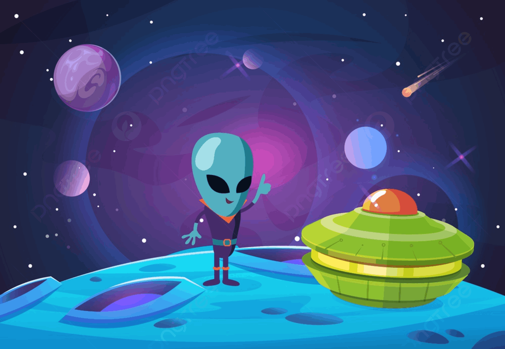

Diana RODRIGUEZ
Passionné par Technologie, conception Web et programmation, Je suis une personne amicale, prête à aider et à guider les gens.
Marcel le martien
Marcel était perdu dans autre dimension. Il doit rentrer chez lui en traversant cette dimension bizarre en récupérant la pièce d’or pour accéder aux portails… mais attention au robot DEVIL RED et à la batterie qui prend de L'ÉNERGIE !

Niveau de jeux
PLAN MARKETING
Notre stratégie marketing pour Marcel se concentre sur l’utilisation des plateformes de médias sociaux pour interagir efficacement avec notre public cible. En créant des contenus attrayants tels que des teasers de gameplay, des mises à jour de développement en coulisses et des défis de contenu générés par les utilisateurs, nous visons à créer une communauté en ligne dynamique autour du jeu. De plus, nous prévoyons de collaborer avec des influenceurs populaires et des communautés de joueurs pour amplifier notre portée et générer du buzz. Notre objectif est de créer de l’excitation et de l’anticipation pour la sortie du jeu, de stimuler les précommandes et les achats du jour un tout en établissant la rétention à long terme des joueurs grâce à l’engagement continu de la communauté et aux mises à jour du contenu après le lancement.